Триггеры
Триггер - устройство, которое может находиться в одном из двух устойчивых состояний и переходить из одного состояния в другое под воздействием входного сигнала. При этом напряжение на его выходе скачкообразно изменяется. Триггер является базовым элементом последовательностных цифровых устройств.
Триггеры предназначены для запоминания двоичной информации. В нем может храниться либо 0 либо 1. Использование триггеров позволяет реализовывать устройства оперативной памяти (то есть памяти, информация в которой хранится только на время вычислений). Однако триггеры могут использоваться и для построения некоторых цифровых устройств с памятью, таких как счётчики, преобразователи последовательного кода в параллельный или цифровые линии задержки.
Для удобства использования триггеры имеют два выхода:
- прямой Q;
- инверсный Q.
Логические уровни на этих двух выходах противоположны. Это сделано для удобства соединения триггеров с другими логическими элементами устройств. Некоторые типы триггеров инверсного выхода не имеют.
Состояние триггера определяется по выходному сигналу. Состоянию триггера 1 соответствует на выходе Q высокий уровень сигнала (1). Состоянию триггера 0 соответствует на выходе Q низкий уровень сигнала (0).
Входы триггера делятся на информационные и вспомогательные (управляющие). Сигналы, поступающие на информационные входы, управляют состоянием триггера. Сигналы на вспомогательных входах используются для предварительной установки триггера в требуемое состояние и синхронизации.
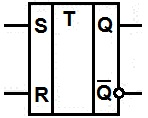
Рис. 1 - Стандартное обозначение триггера
Обозначения входов триггеров:
S - раздельный вход установки в единичное состояние (напряжение высокого уровня на прямом выходе Q);
R - раздельный вход установки в нулевое состояние (напряжение низкого уровня на прямом выходе Q);
D - информационный вход (на него подается информация, предназначенная для занесения в триггер);
C - вход синхронизации;
Т - счетный вход.
Число входов зависит от структуры и функций, выполняемых триггером.
Классификация триггеров
По способу приема информации:
- Асинхронные триггеры воспринимают информационные сигналы и реагируют на них в момент появления на входах триггера.
- Синхронные (тактируемые )триггеры реагируют на информационные сигналы при наличии разрешающего сигнала на специальном управляющем входе С, называемом входом синхронизации.
Синхронные триггеры подразделяются на:
- Триггеры со статическим управлением воспринимают информационные сигналы при подаче на вход С уровня 1 (прямой С-вход) или 0 (инверсный С-вход).
- Триггеры с динамическим управлением воспринимают информационные сигналы при изменении сигнала на С-входе от 0 к 1 (прямой динамический С-вход) или от 1 к 0 (инверсный динамический С-вход).
По принципу построения триггеры со статическим управлением подразделяются на:
- Одноступенчатые триггеры характеризуются наличием одной ступени запоминания информации.
- В двухступенчатых триггерах имеются две ступени запоминания информации. Вначале информация записывается в первую ступень, а затем переписывается во вторую и появляется на выходе.
По функциональным возможностям различаются:
- триггер с раздельной установкой состояний 0 и 1 (RS-триггер);
- триггер с приемом информации по одному входу D (D-триггер или триггер задержки);
- триггер со счетным входом Т (T-триггер);
- универсальный триггер с информационными входами J и K (JK-триггер).
Наибольшее распространение в цифровых устройствах получили RS-триггер с двумя установочными входами, тактируемый D-триггер и счетный Т-триггер.
Для обозначения функциональных возможностей триггеров в интегральном исполнении используется следующая маркировка: TR — RS-триггер; TB — JK-триггер; ТМ — D-триггер.
В качестве базовых логических элементов можно использовать элементы ИЛИ-НЕ, И-НЕ. Поскольку триггер является простейшим ПЦУ, закон функционирования может быть задан таблицей переходов, в которой входные сигналы в момент их изменения и состояние триггера обозначены индексом t, а после переключения — индексом t+1.
Основные характеристики триггеров
- Быстродействие - максимальная частота переключения состояний триггера.
- Чувствительность - наименьшее напряжение на входе (пороговым напряжением), при котором происходит переключение.
- Помехоустойчивость - способность триггера нормально работать в условиях помех.
- Функциональные возможности характеризуются числом входных сигналов.
RS-триггер
Асинхронный RS-триггер c прямыми входами
Асинхронный RS-триггер c прямыми входами имеет два информационных входа S и R, используемые для установки соответственно 1 и 0, а также два выхода: прямой и инверсный. RS-триггер построен на двух логических элементах ИЛИ-НЕ, соединенных в контур (рис. 2).
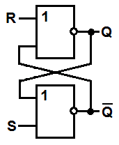
Рис. 2 - Схема асинхронного RS-триггера на логических элементах ИЛИ-НЕ.
Входы R и S прямые (активный уровень '1')
При комбинации сигналов S=1, R=0 (табл. 1) триггер переходит в состояние 1 независимо от предыдущего состояния. При S=0, R=1 триггер устанавливается в состояние 0. Комбинация сигналов S=0, R=0 не изменяет состояния триггера, т. е. состояние триггера в момент t+1 равно состоянию триггера в момент t. Набор сигналов S=1, R=1 является запрещенным, так как он приводит к нарушению работы триггера и неопределенности его состояния.
Таблица 1
| St | Rt | Qt | Qt+1 |
|---|---|---|---|
| 0 | 0 | 0 | 0 |
| 0 | 0 | 1 | 1 |
| 0 | 1 | 0 | 0 |
| 0 | 1 | 1 | 0 |
| 1 | 0 | 0 | 1 |
| 1 | 0 | 1 | 1 |
| 1 | 1 | 0 | — |
| 1 | 1 | 1 | — |
RS-триггер может быть построен на элементах "И-НЕ" (рис. 3). Вход S (Set) позволяет устанавливать выход триггера Q в единичное состояние при подаче на его вход логического нуля. Вход R (Reset) позволяет сбрасывать выход триггера Q в нулевое состояние при подаче на его вход логического нуля.
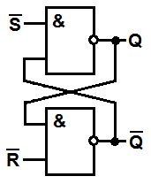
Риc. 3 - Схема простейшего триггера на схемах "И-НЕ".
Входы R и S инверсные
(активный уровень "0")
Так как триггер при построении его на различных элементах работает одинаково, то его изображение на принципиальных схемах тоже одинаково. Изображение простейшего триггера на принципиальных схемах приведено на рисунке 4.
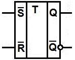 |
|
| а) | б) |
Рис. 4 - Условное графическое обозначение асинхронного RS-триггера
а) - с прямыми входами, б) - с инверсными входами
Синхронный RS-триггер со статическим управлением
Схема триггера позволяет запоминать состояние логической схемы, но так как в начальный момент времени может возникать переходный процесс (в цифровых схемах этот процесс называется опасные гонки), то запоминать состояния логической схемы нужно только в определённые моменты времени, когда все переходные процессы закончены. То есть цифровые схемы требуют синхросигнала. Все переходные процессы должны закончиться за время периода синхросигнала.Для таких цифровых схем требуются синхронные триггеры.
Синхронный RS-триггер со статическим управлением (рис. 3) отличается от асинхронного наличием С-входа, на который поступают синхронизирующие (тактовые) сигналы.
Синхронный RS-триггер принимает состояние 1, если на входы С и S поступают уровни 1, или сохраняет единичное состояние при отсутствии единичных сигналов на входе С или R.
Схема синхронного триггера приведена на рисунке 5, а обозначение на принципиальных схемах на рисунке 6.
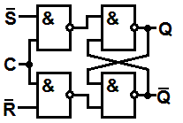
Рис. 5 - Схема синхронного триггера на схемах "И-НЕ"
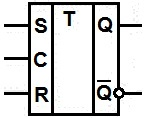
Рис. 6 - Условное графическое обозначение
синхронного RS-триггера со статическим управлением
Синхронный RS-триггер с динамическим управлением
В синхронном RS-триггере с динамическим входом (рис. 7) информация воспринимается триггером со входов S и R при смене уровней С=1 на С=0.
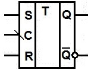
Рис. 7 - Условное графическое обозначение
синхронного RS-триггера с динамическим управлением
JK-триггер
JK-тригггер (рис. 8) представляет собой двухступенчатый синхронный триггер. Закон функционирования JK-триггера задан в табл. 2.
Если на входе J высокий потенциал, а на входе K – ноль, то триггер установится в единичное состояние. Если на входе J – ноль, а на входе К высокий потенциал, то триггер "сбросится" в нулевое состояние. Когда J=K=0 независимо от тактовых импульсов состояние триггера не меняется. .В отличие от RS-триггера JK-триггер не имеет запрещенных комбинаций сигналов на входах J и К: при J=1 и K=1 триггер изменяет свое состояние на противоположное. В этом случае триггер работает как делитель частоты на два
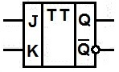
Рис. 8 - Условное графическое обозначение JK-триггера
Таблица 2
| Входы | Выход | Состояние | |
|---|---|---|---|
| Jt | Кt | Qt+1 | |
| 1 | 0 | 1 | Запись 1 |
| 0 | 1 | 0 | Запись 0 |
| 0 | 0 | Qt | Хранение |
| 1 | 1 | Qt | Счетный режим |
На рис. 9 представлен синхронный JK-триггер с динамическим управлением и выводами предустановки S и R. Такой триггер изменяет состояние по фронту (переход от "0" к "1") тактового импульса на входе С.
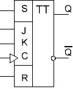
Рис. 9 - Условное графическое обозначение
синхронного JK-триггера с динамическим управлением
Т-триггер
Т-триггер (счетный триггер) имеет один вход Т, куда подают тактирующие (счетные) импульсы. Функционирование T-триггера описывается диаграммой на рис. 10. После подачи каждого тактирующего импульса состояние Т-триггера меняется в обратное (инверсное) предыдущему состоянию.
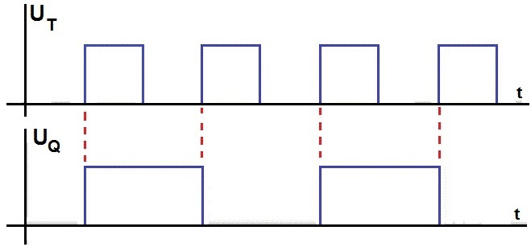
Рис. 10 - Временная диаграмма работы Т-триггера
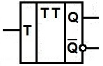
Рис. 11- Условное графическое обозначение Т-триггера
D-триггер
D-триггер (от англ. delay) запоминает входную информацию при поступлении синхроимпульса.
Хранение информации в D-триггерах обеспечивается за счет синхронизации, поэтому все реальные D-триггеры имеют два входа: информационный D и синхронизации С (рис. 12). Под действием синхросигнала С информация, поступающая на вход D, принимается в триггер, но на выходе Q появляется с задержкой на один такт. В D-триггере с динамическим входом прием в триггер информации со входа D происходит в момент смены на входе С уровня 0 на уровень 1.
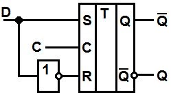
Рис. 12 - Схема D-триггера
Таблица 3
| C | D | Qt+1 |
|---|---|---|
| 1 | 0 | 0 |
| 1 | 1 | 1 |
Условное графическое обозначение D-триггера показано на рис. 13.
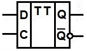
Рис. 13 - Условное графическое обозначение D-триггера
Так как информация на выходе остается неизменной до прихода очередного импульса синхронизации, D-триггер называют также триггером с запоминанием информации или триггером-защелкой. Легче всего объяснить появление этого названия по временной диаграмме, приведенной на рисунке 14.
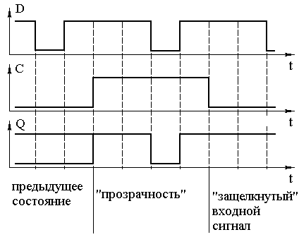
Рис. 14 - Временная диаграмма D-триггера
По этой временной диаграмме видно, что триггер-защелка хранит данные на выходе только при нулевом уровне на входе синхронизации. Если же на вход синхронизации подать активный высокий уровень, то напряжение на выходе триггера будет повторять напряжение, подаваемое на вход этого триггера. Входное напряжение запоминается только в момент изменения уровня напряжения на входе синхронизации C с высокого уровня на низкий уровень. Входные данные как бы "защелкиваются" в этот момент. Отсюда и название - триггер-защелка.
Принципиально в этой схеме входной переходной процесс может беспрепятственно проходить на выход триггера. Поэтому там, где это важно, необходимо сокращать длительность импульса синхронизации до минимума. Чтобы преодолеть такое ограничение были разработаны триггеры, работающие по фронту. Схема такого триггера приведена на рисунке 15, а обозначение на принципиальных схемах на рисунке 16.
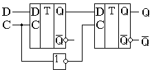
Рис. 15 - Схема универсального D-триггера
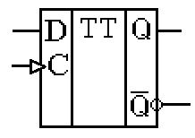
Рис. 16 - Обозначение универсального D-триггера на принципиальных схемах
На рис. 17 представлено условное обозначение D-триггера микросхемы К155ТМ2, содержащей два D-триггера. Входы R и S выполняют те же функции, что и в RS-триггере.
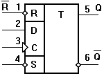
Рис. 17 - D-триггер микросхемы К155ТМ2
D-триггер несложно преобразовать в счетный триггер, т. е. такой, состояние которого изменяется после поступления очередного импульса на счетный вход. Для обеспечения счетного режима необходимо вход D соединить с инверсным выходом триггера (рис. 18,а). Из логики работы D-триггера следует, что после прихода импульса на вход С состояние триггера будет изменяться на противоположное. Это иллюстрируется временными диаграммами, или эпюрами напряжений (рис. 18,б). Подобно таблице истинности, эпюры напряжений дают наглядное представление о работе устройства.
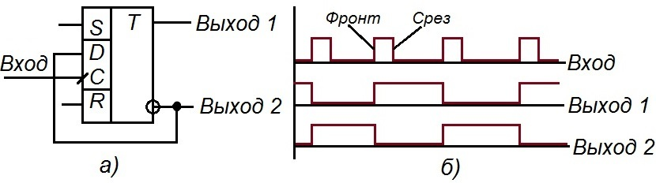
Рис. 18 - Работа D-триггера в счетном режиме
а) - соединение выводов, б) - временные диаграммы
Необходимо отметить, что изменение состояния D-триггера данного типа происходит при изменении напряжения на счетном входе с низкого уровня на высокий. Такое изменение напряжения часто называют положительным перепадом напряжения или фронтом импульса. Реакцию триггера на положительный перепад напряжения отображают косой чертой, пересекающей линию входа С (рис. 18,а). Аналогично изменение напряжения с высокого уровня на низкий называют отрицательным перепадом напряжения, спадом или срезом импульса. На схемах это отображают также косой чертой, но повернутой на 90° относительно показанной на рисунке 18,а. В зависимости от своей внутренней структуры триггер реагирует или на положительный, или на отрицательный перепад напряжения.
Источники
pue8.ru - Логические триггеры: схемы, классификация, устройство, назначение, применение